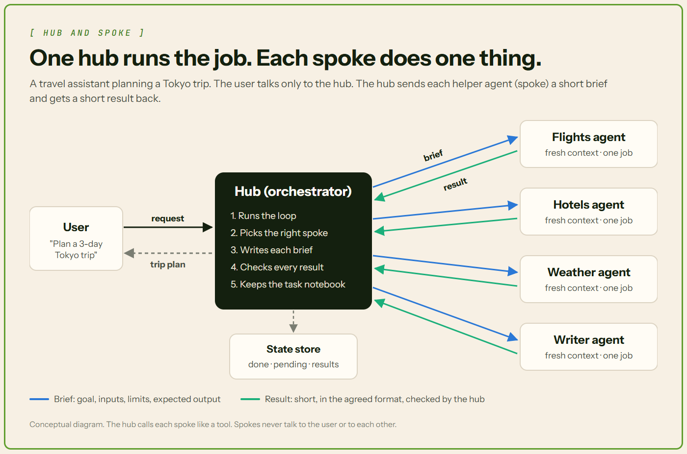

The Architecture Behind Production-Ready Multi-Agent Systems
One AI agent in charge, a few helpers, and the simple rules that keep them working.
- One "hub" agent runs the job. It hands work to helper agents called "spokes".
- Each helper gets a short task and sends back a short answer in a fixed format.
- The hub checks answers, tracks progress, handles errors and knows when to stop.
Imagine asking an AI assistant: "Plan a 3-day trip to Tokyo in March."
That one request hides a lot of work: flights, hotels, weather and a written plan.
One AI agent can try to do it all. But its memory fills up with web pages. It loses track. It repeats itself.
So builders split the work, like a manager with a small team. Anthropic built its Research feature this way. On Anthropic's internal research test in 2025, a team with a Claude Opus 4 lead and Claude Sonnet 4 helpers did 90.2% better than a single Claude Opus 4 agent.
This design is called hub and spoke. The hub is the agent in charge, also called the orchestrator. The spokes are its helpers, also called sub-agents. Making it work every day takes the seven parts below.

📖 Words you'll see in this article
| Term | What it means |
|---|---|
| Agent | An AI that works step by step: act, check the result, decide again. |
| LLM | Large language model. The AI "brain", like GPT or Claude, inside each agent. |
| Tool calling | The AI asking your code to run a named action, like "search flights". Also called function calling. |
| SDK | Software development kit. A ready-made code library. |
| Context window | Everything the AI can "see" at once. Like a desk, space is limited. |
| Token | A small piece of text, often part of a word. AI use is priced in tokens. |
| JSON | A simple text format for data, like {"city": "Tokyo"}. |
| Schema | A rule for the shape of data: which fields it needs, and what type each one is. |
| Latency | How long you wait for an answer. |
| Framework | A toolkit of ready-made code for building something, like an agent team. |
| Postgres | PostgreSQL, a popular free database. |
🔁 1. The orchestration loop
In plain words: the hub works like someone ticking off a to-do list. Do one step, look at the result, pick the next step.
The loop, step by step
This cycle is called the agent loop. With our Tokyo trip:
- Receive the task. "Plan a Tokyo trip."
- Plan. "I need flights, hotels and weather first."
- Call a sub-agent. Send the flights agent its task.
- Read the result. Look at the flight options.
- Decide the next step. Call another sub-agent, or is the job done?
- Finish. Send the trip plan to the user.
Steps 3 to 5 repeat until the job is done.
Sub-agents are tools
Each sub-agent is a tool with a name, a description and inputs. The hub makes a tool call (also called a function call). Your code runs that sub-agent and returns its answer.
In the OpenAI Agents SDK, as_tool() does this. Its docs describe a manager agent that "keeps control of the conversation" and calls helpers when needed.
Stop conditions: when does the loop end?
Without an exit, a loop can run, and cost money, forever. Use at least one stop rule:
- Maximum iterations. Stop after a set number of passes through the loop, like 10. The OpenAI SDK's version is
max_turns, which counts AI calls. Anthropic's guide also lists a maximum number of iterations as a common stopping condition. - A "task complete" signal. In the OpenAI SDK, the AI gives its final answer, with no more tool calls.
- A token or cost budget. Stop after a set number of tokens or dollars. Some SDKs have one built in, like
max_budget_usdin Claude's Agent SDK. Otherwise, you write this check yourself.
What it looks like in code
A tiny travel hub with two sub-agents registered as tools, using the OpenAI Agents SDK in Python:
from agents import Agent, Runner
from pydantic import BaseModel
class Findings(BaseModel): # the answer format
summary: str
sources: list[str]
flights = Agent(name="Flights", output_type=Findings,
instructions="Find flights for your brief. List sources.")
writer = Agent(name="Writer",
instructions="Write a trip plan from the notes you get.")
hub = Agent(name="Hub",
instructions="Plan the trip. Use your tools. Stop when done.",
tools=[
flights.as_tool(tool_name="find_flights",
tool_description="Find flights for given cities and dates."),
writer.as_tool(tool_name="write_plan",
tool_description="Turn notes into the final trip plan."),
])
result = Runner.run_sync(hub, "Plan a 3-day Tokyo trip.", max_turns=10)What each part does:
Findingsis the answer format: a summary and a list of sources.as_tool()turns an agent into a tool. Thetool_descriptiontells the hub when to use it.Runner.run_sync()starts the hub's loop.max_turns=10is the stop rule. After 10 turns (AI calls), the run stops with aMaxTurnsExceedederror. You can also catch it and return a friendly answer.
💡 Good to know: to run it yourself, you need Python 3.10 or newer. Install the SDK with pip install openai-agents and set your OpenAI API key as OPENAI_API_KEY. Each run costs a little, because every AI call uses tokens.
Inside, the SDK runs a loop much like this pseudocode (plain steps written like code). The cost check is one you'd add yourself.
for turn in range(MAX_TURNS):
reply = ask_the_ai(notes, tools)
if not reply.tool_calls: # no tools needed: task complete
return reply.text
for call in reply.tool_calls: # one brief per sub-agent
notes.append(run_spoke(call)) # read the result
if tokens_used(notes) > BUDGET: # your cost check
raise OverBudget()
raise TooManyTurns() # hit the iteration limitHandoffs: when a helper takes over
So far, the hub stays in charge. It calls a helper like a tool, gets the answer back and decides what to tell the user. The OpenAI Agents SDK has a second option, called a handoff.
With a handoff, one agent passes the whole conversation to a specialist. The specialist "becomes the active agent for the rest of the turn" and answers the user directly. Think of a receptionist putting your call through to the billing team.
Here's a travel support agent that checks flights itself, but hands refund questions to a booking agent:
from agents import Agent, Runner, function_tool
from pydantic import BaseModel
@function_tool
def get_flight_status(flight_number: str) -> str:
"""Look up the live status of a flight."""
return f"{flight_number} is on time." # stand-in for a real flight API
class TripReply(BaseModel): # the answer format
answer: str
booking_agent = Agent(
name="Booking Agent",
handoff_description="Handles payments, refunds and booking changes.",
instructions="You help with payments, refunds and booking changes.",
)
travel_agent = Agent(
name="Travel Support Agent",
instructions=(
"You help travellers. Use tools to check flights. "
"Hand off payment and refund questions to the Booking Agent."
),
tools=[get_flight_status],
handoffs=[booking_agent],
output_type=TripReply,
)
result = Runner.run_sync(travel_agent, "I want a refund for my hotel booking.")
print(result.last_agent.name) # "Booking Agent" if it took overWhat each part does:
@function_toolturns a normal Python function into a tool. The agent calls it and gets the answer back.handoffs=[booking_agent]lets the travel agent pass the conversation on. The SDK shows it to the AI as a tool namedtransfer_to_booking_agent.handoff_descriptiontells the AI when to pick that handoff.output_type=TripReplyis the answer format when the travel agent replies itself. After a handoff, the final answer comes from the booking agent.result.last_agentshows which agent finished the job.
| Agents as tools | Handoffs | |
|---|---|---|
| Who answers the user? | The hub | The specialist |
| Who stays in control? | The hub, the whole time | The specialist, for the rest of the turn |
| What does the helper see? | Only the hub's brief | The whole conversation, by default |
| Best for | A small job the hub checks and combines | Passing the user to a specialist, like refunds |
💡 Good to know: in the loop, a handoff just swaps the active agent. The SDK docs put it this way: "If the LLM requests a handoff, we update the current agent and input, and re-run the loop." The new agent sees the whole earlier conversation by default. That's the opposite of the clean desk in section 3, so you can trim it with an input_filter.
🧭 2. Routing: how the hub picks a spoke
In plain words: routing means choosing which helper gets the job. It's like a hospital front desk sending you to the right doctor.
LLM-based routing
The AI reads each tool's name and description, then picks the best fit. In Anthropic's Agent SDK, Claude picks a helper based on the task and each helper's description. So write each description like a job ad: what the helper does, and when to call it.
Rule-based or classifier routing
Plain code decides, with explicit rules: "If the message mentions a hotel, send it to the hotels agent." Or an intent classifier, a small model that sorts each message into a group like "flights" or "hotels". Anthropic notes routing can use an LLM or a more traditional classification model.
This is cheaper, since there's no big AI call. It's also more predictable. OpenAI's docs say deciding in code is more predictable in speed, cost and performance.
When to pick rules: when the answer must be the same every time, or a wrong call costs money. For example:
- A refund gate. "Is the trip more than 2 days away? Send the refund to the booking agent. If not, send it to a person." The same request always gets the same answer. (The 2-day rule is made up for this example.)
- Clear, repeated requests, like "flight status" or "find a hotel".
- Lots of traffic. Skipping an AI call on every message saves time and money.
Hybrid routing
Rules handle the known paths: clear, common requests. The LLM handles the ambiguous cases.

💡 Good to know: hybrid is a good default. Most travel requests are clear, like "find me a hotel". Rules handle those cheaply.
📦 3. Context isolation and passing
In plain words: each helper starts with a clean desk. It only gets a short note from the hub, called a brief.
A fresh, isolated context for each sub-agent
In Anthropic's Agent SDK, a regular sub-agent "runs in its own conversation, which starts fresh". It doesn't see the main chat. It gets its own instructions plus the prompt the hub writes. (A "fork" is the exception: it copies the chat so far.)
The brief: goal, inputs, constraints and expected output
The brief must be complete, because it's all the helper sees. Anthropic says each helper needs a goal, an output format, tool guidance and clear limits. Here's a brief for the flights agent:
- Goal: find round-trip flights from Delhi to Tokyo.
- Inputs: March 10 to 13, one adult.
- Constraints: under $900. Use only the flight search tool.
- Expected output: the top 3 options, with price, times and a link.
Why small, clean contexts work better
- Better accuracy. The more text an AI holds, the worse it recalls details. Researchers call this "context rot", and Anthropic's guide warns about it.
- Lower cost. You pay for every token the AI reads.
- Security (least privilege). Each helper sees only what its job needs. A billing agent never sees medical notes. In our trip, the weather agent never sees the traveller's passport details.
- Fault containment. A helper can get confused, or tricked by prompt injection: hidden instructions in a web page it reads. With its own small context, the damage mostly stays inside that helper. The hub only gets its short result, and checks it before using it (section 4).
Condensed results, so the hub doesn't overflow
A helper may read a lot, but it sends back a short summary. Anthropic's guide says a sub-agent may use tens of thousands of tokens, but often returns a summary of just 1,000 to 2,000. Send back everything, and the hub's context window overflows.

📝 4. Structured input/output contracts
In plain words: a contract is an agreed form. Like a bank form, every answer fills in the same boxes.
Why free text breaks
Without a contract, a helper might reply: "Found a few, the best is around $640 I think."
The hub must dig the price out of a sentence. That's called parsing free text. It works until the wording changes. Then the hub reads the wrong number, or none, and breaks without warning.
A JSON schema for each spoke's input and output
The fix: write a JSON schema for what each spoke receives and returns. Here's the flights agent's output schema. Every answer needs an airline, a price and a link:
{
"type": "object",
"properties": {
"airline": { "type": "string" },
"price_usd": { "type": "number" },
"link": { "type": "string" }
},
"required": ["airline", "price_usd", "link"]
}So every answer looks like this:
{ "airline": "Example Air", "price_usd": 640, "link": "https://..." }The input schema works the same way, requiring cities, dates and a maximum price. Providers can enforce schemas for you. OpenAI's Structured Outputs makes the model's answer follow your schema (except in rare cases, like a refusal or a cut-off reply). Anthropic's strict tool use guarantees Claude's tool inputs match your schema.
A shape for failures, too
Sometimes a spoke can't finish. It should still answer in a fixed shape, so the hub knows exactly what went wrong. Here's the flights agent reporting a timeout:
{
"status": "failed",
"errors": [
{
"code": "TOOL_TIMEOUT",
"message": "Flight search did not respond; only cached fares were checked.",
"source": "tool:flight_search"
}
],
"retry": {
"retryable": true,
"strategy": "retry_failed_part_only",
"after_ms": 5000
}
}Three rules make this work:
- Error codes come from a fixed list. This list is called an enum. For example:
TOOL_TIMEOUT,TOOL_ERROR,SCHEMA_VALIDATION_ERROR,MISSING_REQUIRED_INPUT,LOW_CONFIDENCE,POLICY_BLOCKED,RATE_LIMITED. The hub's retry logic reads the code. The message is for humans and logs. - The spoke suggests, the hub decides.
retryableandstrategyare only hints. Here,retry_failed_part_onlymeans "redo just the part that failed". The hub owns the retry budget, like 2 or 3 attempts at most. It also sets the backoff: how long to wait between tries. - Some failures are worth retrying, some aren't. Timeouts and rate limits ("too many requests, slow down") often clear up, so retry them. Bad input and policy blocks will fail the same way again, so don't.
Section 7 shows what the hub does next: retry, fall back or ask a human.
Validate before the hub uses it
The hub still checks every answer before using it. This is called validation:
- Shape check: does it match the schema? Are all the fields there?
- Sense check: does it make sense? A $0 flight fits the schema, but it's wrong.
Retry or reject when the check fails
- Retry: send the task back once, with the error message. "Price is missing. Please include price_usd."
- Reject: if it fails again, don't use it. Try another way, or tell the user.
💡 Good to know: never pass an unchecked answer to the next step. One bad price can end up in the final plan.
🗂️ 5. State management
In plain words: state is the hub's notebook. It records where the job stands right now.
The hub owns the task state
For our trip, the notebook might say:
- Done: flights found. Weather checked.
- Pending: hotels still searching. Plan not written.
- Intermediate results: the 3 flight options and the weather forecast.
Only the hub keeps it, so there's one clear record.
Spokes are ideally stateless
Spokes keep nothing. They do one job, return and forget. This is called being stateless. It makes them easy to retry or swap. If the hotels agent crashes, the hub just sends the brief again.
Long-running tasks need an external store
Imagine an hour-long task crashing at minute 40. If the notebook lived only in memory, that work is gone. So save it in an external store, like a database. LangGraph saves a checkpoint, a snapshot of progress, after each step. If a step fails, you can restart from the last good step instead of from scratch. Its docs suggest a Postgres database for production.
💡 Good to know: Anthropic's research system resumes from where the error happened instead of starting over.
⚡ 6. Execution: parallel vs. sequential
In plain words: some jobs can happen at the same time. Others have to wait their turn.
Parallel: independent jobs at the same time
Flights, hotels and weather don't depend on each other. So the hub sends all three briefs at once. That cuts latency: you only wait for the slowest job. As Anthropic's SDK docs put it, independent subtasks "finish in the time of the slowest one rather than the sum of all of them."
Sequential: one output feeds the next
The writer needs all three results first, so it waits. Dependent jobs run one after another, each output feeding the next spoke.

In 2025, Anthropic's system ran 3 to 5 helpers at once, each using three or more tools at once. Those two changes cut research time by up to 90% for complex questions.
The hub aggregates the results
Finally the hub combines everything. This is called aggregating, and it has three steps:
- Merge: gather all the results in one place.
- Resolve conflicts: two prices for one hotel? Trust the official site, or say it's unclear.
- Build the final response: write the trip plan for the user.
🛟 7. Failure handling
In plain words: things will go wrong. A good hub has a plan for each kind of problem.

A spoke fails or times out
Maybe the flight site is down, or the hotels agent is too slow. The hub has three moves:
- Retry. Try the same spoke again. Many errors are temporary.
- Fall back. Use a backup spoke, like a second flight search.
- Escalate to a human. Ask a person for help. Anthropic's guide says agents can pause for human feedback when they get stuck.
Anthropic's own system uses retry logic and regular checkpoints as safety nets.
A spoke returns a low-quality answer
Sometimes a spoke sends back something weak, like a hotel with no price. Validation from section 4 catches it before it spreads. Then the hub retries or rejects it.
Loop protection: cap the delegations
Sometimes the hub keeps calling spokes and never finishes. Early on, Anthropic saw its system make errors like "spawning 50 subagents for simple queries".
Anthropic fixed this by writing effort rules into its prompts, like one helper for a simple question. A hard cap on delegations per task is a good backstop, and you set it yourself. Claude's Agent SDK has related limits you can change: by default, up to 20 sub-agents running at once and 3 levels of helpers calling helpers, plus an optional spend cap.
What the research says
A 2025 study by Cemri and colleagues checked 1,642 runs from seven multi-agent frameworks. Two of the top three were loop problems: repeating steps (15.7% of the failures they recorded) and not knowing when to stop (12.4%). Many failures come from how the agents are organized, not each agent's limits.

💡 Good to know: test these failures before launch. See how to evaluate AI agents.
🧳 One request, start to finish
In plain words: here's the whole Tokyo trip in one go, with each of the seven parts doing its job.
| Step | What happens | Part |
|---|---|---|
| 1 | The user asks: "Plan a 3-day Tokyo trip in March." The hub plans: flights, hotels, weather, then a write-up. | 1. Loop |
| 2 | Rules spot "flights", "hotels" and "weather" and pick those spokes. No LLM call needed. | 2. Routing |
| 3 | The hub writes three short briefs. Each spoke starts with a fresh context. | 3. Context |
| 4 | All three briefs go out at once. | 6. Parallel |
| 5 | The hotels agent times out. The hub's retry code tries again, and the second try works. | 7. Failures |
| 6 | The flights agent returns a $0 fare. The sense check fails. The hub's retry code tries again with the error, and the new answer passes. | 4. Contracts |
| 7 | The hub updates its notebook: flights, hotels and weather done. It saves this to the database. | 5. State |
| 8 | The hub merges the three short summaries into one brief for the writer. | 6. Sequential |
| 9 | The writer drafts the plan. The hub checks it, settles a hotel price clash and builds the final response. | 6. Aggregation |
| 10 | No more tools needed: "task complete". Only 2 of the 10 allowed passes through the loop were used. | 1. Stop rule |
💸 The catch: more agents, more cost
In Anthropic's 2025 data, one agent used about 4 times the tokens of a chat. A multi-agent system used about 15 times.

So start simple. Anthropic advises the simplest solution possible. Anthropic found they pay off for valuable tasks: lots of parallel work, more information than one context window holds, or many complex tools.
When not to split the work
Not everyone is a fan. In June 2025, Cognition, the company behind the Devin coding agent, published "Don't Build Multi-Agents". Its warning: helpers that can't see each other's work make clashing choices.
Its example is a Flappy Bird game clone. One helper builds a background that looks like Super Mario Bros. Another builds a bird that doesn't fit the game. The final agent is stuck combining the two.
In April 2026, Cognition updated its view. Its new post says multi-agent systems "work best today when writes stay single-threaded". In plain words: many helpers can look things up, but only one should create or change things.
Our travel assistant follows that rule. Three helpers only search. One writer writes the plan.
Where to start
- Build one agent with tools. See where it struggles.
- Move the heaviest job into a helper with a brief and a schema.
- Add limits, answer checks and saved progress. Then go parallel.
✅ Conclusion
Multi-agent systems sound complicated, but the core idea is simple: one boss, a few helpers and clear rules.
The loop knows when to stop. Briefs are short, answers are checked and progress survives a crash. Get those right, and adding a helper is as easy as adding a tool.